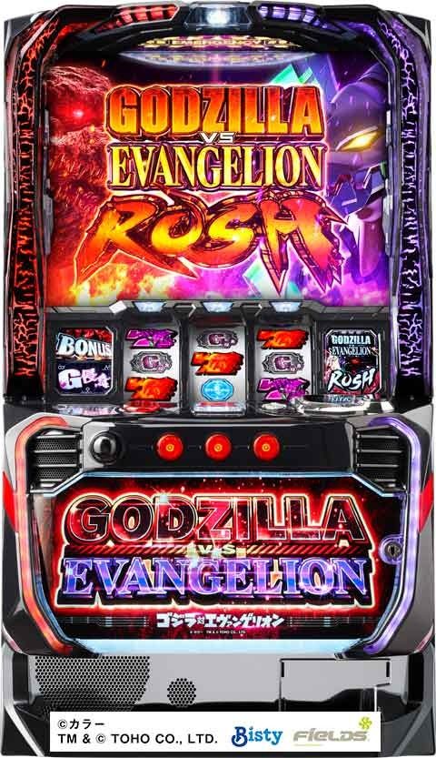

Lゴジラvsエヴァンゲリオン

【天井情報】
ボーナス間天井
1000G ボーナス当選
設定変更時 700Gに短縮
ATスルー天井
8スルーで次回ボーナスAT当選(9回目でAT確定)
設定変更時 4スルーに短縮
【リセット判別】
ビスティなのでスロー動画撮ればガックン確認可能？
【有利区間について】
差枚2200枚でエンディングへ。
有利区間切れで上位ATかけた決戦キングギドラに突入。
狙い目
【スルー別リセット狙い】
ボーナス間
0スルー 430Gから
1スルー 730Gから
2スルー 400Gから
3スルー 0Gから
AT間
積極派 2スルー400Gから
慎重派 3スルーから
スルーの確認方法
ゴジラvsエヴァンゲリオン
【スルーボーナス間天井狙い】
内部的にゴジラポイントがあり最大7ptでゴジラモードに移行し、次回ゴジラボーナスが確定。ラッシュチャレンジ1.2スルーは期待枚数に影響が出るため、その場合はボーダーを+40G前後上げた方が良さそう。
0スルー、3スルー以降はそのままのボーダーで。
0スルーから1スルー
670Gから
2スルー から4スルー
640Gから
5スルー(AT間込みで)
積極派 400Gから
慎重派 500Gから
【スルー天井狙い】
6スルー 0Gから
【メニュー画面狙い】
(赤)
ゲンドウ ボーナス当選まで。ゴジラボーナスではなかった場合はAT当選まで。
(緑)
シンジ、マリ 350Gから
アスカ 450Gから
{kind=link}
【ボーナス終了時ボイス】
アスカ 3スルー以降ならボーナス当選まで
レイ 5スルーからAT当選まで
ミサト
積極派 AT当選まで
慎重派 200GからAT当選まで
加治 AT当選まで
{kind=link}
【ゾーン狙い】
・0スルー時
400前半のゾーン
380Gから440Gまで
※差枚が1500枚以下の場合
・1スルー以降時
100前半のゾーン
80Gから140Gまで
※110Gでモスラステージにいなければ前兆終わってる
200後半のゾーン
230Gから290Gまで
※260G前後で落ちてる台は前兆終わってそう
【上位AT後引き戻し狙い】
上位AT後即やめ台は引き戻し見た方が良さそう。
【有利区間切れ狙い】
差枚2200枚でのエンディングへ行くと思われる。
差枚1600枚以上なら通常AT後の引き戻し確認。
差枚1800枚以上なら100-140のゾーンも確認。
やめ時
AT終了後70G以内の引き戻しは現状弱そうなので即やめ。
上位AT後の引き戻しは必ず上位ATなので引き戻し見た方が良さそう。
ボーナス後は即やめ。
その他
【データの見方】
ART→AT
BB
※店により表記違う可能性あり
① 基本的にボーナス(平均獲得100枚)
②1G連のBB→RUSHチャレンジ(ボーナスではない。平均獲得25枚)
③2G連のBB→1G連のボーナス？(平均獲得100枚)
③をスルー回数に含めて良さそう
{kind=link}
参考元
基本情報
- メーカー: ビスティ
- 機械割: 97.7% 〜 114.9%
- 導入開始日: 2024年02月05日（月）
- ゲーム性概要: 通常時は小役での直撃やCZを契機にボーナスを抽選、ボーナス後のラッシュチャレンジからATを目指すゲーム性だ。 ATは純増約5枚/Gのゲーム数管理型で、レア役などでゲーム数上乗せやCZを抽選する。 上位AT「G覚醒ラッシュ」はAT終了時の一部などに突入する「決戦キングギドラ」に勝利することで移行。一度突入すれば約77%でループする（初回は100G以上継続）ので超強力だ。 通常時からAT中まで成立するG侵食役は特殊なレア役となっていて、「変異」が発生すればG侵食役の高確率状態移行や各種抽選の優遇など、多彩な恩恵を受けることができる。


打ち方
打ち方・小役
BAR狙い（小役狙い）
［最初に狙う絵柄］

左リール上段付近にBARを目押し。
［BAR下段停止］ 成立役：ハズレorベルorリプレイorG侵食役orリーチ目役

［角チェリー停止］ 成立役：弱チェリーor強チェリー

［スイカ上段停止］ 成立役：スイカorチャンス目orリーチ目役

［レア役の停止形］

［リーチ目役の停止例］

紫7狙い（小役狙い）
［最初に狙う絵柄］

左リール上段付近に紫7を目押し。Gがチェリーの代用となるため取りこぼしはない。強レア役時は必ずサンド目が停止するのが特徴だ。
［紫7下段停止］ 成立役：ハズレorベルorリプレイorG侵食役

［紫7中段停止］ 成立役：リプレイor弱チェリーorG侵食役

［スイカor赤7上段停止］ 成立役：スイカ

左リールの赤7はスイカの代用になる。
［紫7上段停止］ 成立役：チャンス目or強チェリーorリーチ目役

強レア役以上の1確目！
［レア役・リーチ目役の停止形］

変則押しはNG

通常時は左1stでの消化を推奨だ。
解析情報通常時
小役関連
小役履歴

各小役は連続して引くとボーナス当選のチャンス。レア役は単体でも期待できるが、連続すれば大チャンスとなる。各役は履歴に表示されるためわかりやすい。
小役履歴のアイコン
| アイコン | 解説 |
|---|---|
| リプレイ | 3連以上でボーナスのチャンス |
| ベル | 3連以上でボーナスのチャンス |
| G（G侵食役） | 5G以内に小役成立で変異発生のチャンス |
| 青チャンス（弱チェリー相当） | ボーナスのチャンスかも |
| 赤チャンス（強レア役） | ボーナスの大チャンス |
| 金or虹チャンス | ボーナス濃厚 |
小役確率
| 役 | 確率 |
|---|---|
| リプレイ | 1/8.7 |
| ベル | 1/19.5 |
| 弱チェリー | 1/90.0 |
| スイカ | 1/128.0 |
| 強チェリー | 1/655.4 |
| チャンス目 | 1/655.4 |
| G侵食役 | 1/90.0 |
| リーチ目役 | 1/16384.0 |
※レア役合算確率は1/30.2
CZ当選率（スイカ契機）
| 設定 | 当選率 |
|---|---|
| 1 | 20.3% |
| 2 | 21.1% |
| 4 | 25.0% |
| 5 | 27.7% |
| 6 | 30.5% |
［通常時］レア役の抽選内容
| 役 | 抽選内容 |
|---|---|
| 弱チェリー | 高確移行・ボーナス抽選 |
| スイカ | CZ抽選 |
| チャンス目 | 高確移行・ボーナス抽選 |
| 強チェリー | 高確移行・ボーナス抽選 |
| リーチ目役 | ボーナス濃厚 |
［通常滞在時］ボーナス当選率
| 役 | 当選率 |
|---|---|
| ベルorリプレイ3連 | 約4% |
| ベルorリプレイ4連 | 約22% |
| ベルorリプレイ5連 | 100% |
| 弱チェリー | 約1% |
| レア役2連 | 約22%～100% |
| レア役3連 | 100% |
| 弱レア役→強レア役 | 約38%～100% |
| 強レア役→強レア役 | 100% |
| リーチ目役 | 100% |
内部状態関連
内部状態概要
内部状態はボーナス当選率に関わる通常・高確・超高確に加え、宇宙ステージが存在。宇宙ステージは 「ボーナス当選でAT濃厚」 となるうえ、各役成立時のボーナス当選期待度も大幅にアップする。
内部状態一覧
| 内部状態 | 特徴 |
|---|---|
| 通常 | デフォルト状態 |
| 高確 | 保証ゲーム：13G、ボーナス当選率アップ |
| 超高確 | 保証ゲーム：13G、ボーナス当選率大幅アップ |
| 宇宙ステージ | 保証ゲーム：10G、保証分消化後はハズレの約75%で転落、 ボーナス期待度大幅アップ＋ボーナス当選でAT濃厚 |
※保証ゲーム数終了後は転落抽選
宇宙ステージ中のボーナス当選率

宇宙ステージは10G＋α継続して、滞在中のボーナスはAT濃厚。ボーナス当選のトータル期待度は約53%だ。
宇宙ステージ中のボーナス当選率
| 役 | 当選率 |
|---|---|
| ベル | 約23% |
| リプレイ | 約23% |
| 弱レア役 | 約67% |
| 強レア役 | 100% |
高確＆超高確移行率
高確・超高確は通常時移行時や通常時の弱チェリーから移行。保証ゲーム数は13Gで、保証分終了後から弱チェリー＆強レア役以外時に転落を抽選する。
通常時移行時の内部状態振り分け （ボーナス後・継続ジャッジ後・有利区間移行時）
| 設定 | 通常へ | 高確へ | 超高確へ |
|---|---|---|---|
| 1 | 89.1% | 10.2% | 0.8% |
| 2 | 86.7% | 12.5% | 0.8% |
| 4 | 83.6% | 15.6% | 0.8% |
| 5 | 81.3% | 18.0% | 0.8% |
| 6 | 78.9% | 20.3% | 0.8% |
［通常滞在時］高確＆超高確移行率
| 役 | 通常のまま | 高確へ | 超高確へ |
|---|---|---|---|
| その他 | － | － | － |
| 弱チェリー | 62.5% | 37.5% | － |
| 強レア役 | 50.0% | 50.0% | － |
［高確滞在時］高確＆超高確移行率
| 役 | 通常へ | 高確のまま | 超高確へ |
|---|---|---|---|
| その他 | 12.5% | 87.5% | － |
| 弱チェリー | － | 62.5% | 37.5% |
| 強レア役 | － | 50.0% | 50.0% |
G侵食役（通常時）
G侵食役概要

特殊なレア役で、成立時の抽選だけでなく、 成立後に引いた小役に応じて様々な変異を抽選 。発生した変異に応じて多彩な恩恵を受けることができる。もちろん変異が複合するパターンもあり。 変異発動後は変異状態が10G＋α継続する（10G後から転落抽選）。
G侵食役確率
| 状態 | 確率 |
|---|---|
| 通常 | 約1/90 |
| 高確 | 約1/10 |
［通常時］変異パターン
| 変異 | 解説 |
|---|---|
| 小役変異 | 小役をレア役以上に変換 （履歴内） |
| 増殖変異 | 小役を2連扱いに変換 （10G＋α継続） |
| 宇宙変異 | 宇宙ステージ突入 （10G＋ハズレ時の約75%で転落） |
| G細胞活性化 | G侵食役＆レア役高確状態へ （20G継続） |
AT中の変異はコチラ
宇宙変異→G細胞活性化→増殖変異の順で抽選され、漏れた場合に小役変異が発動する。
G侵食役時の変異出現比率（設定1）
| 変異パターン | 比率 |
|---|---|
| 宇宙変異 | 4.7% |
| G細胞活性化 | 1.9% |
| 増殖変異 | 13.8% |
| 小役変異 | 79.6% |
小役変異発動時の成立役別のシンボル振り分け
| 役 | チャンス［青］ | チャンス［赤］ | チャンス ［紫・金・虹］ |
|---|---|---|---|
| ベル | 74.9% | 25.0% | 0.1% |
| リプレイ | 74.9% | 25.0% | 0.1% |
| スイカ | － | 99.9% | 0.1% |
| 弱チェリー | － | 99.9% | 0.1% |
| 強レア役 | － | － | 100% |
| リーチ目役 | － | － | 100% |
| G侵食役 | 49.9% | 50.0% | 0.1% |
※すべてチャンスシンボルの色
［小役変異］

［増殖変異］

［宇宙変異］

［G細胞活性化］

［CZ中］変異パターン
| 変異 | 解説 |
|---|---|
| 呪縛開放 | レイ解呪（CZ成功） |
| BONUS増殖 | ボーナスストック×1 |
呪縛解放はG侵食役成立時に発動。さらにその後の履歴内（5G間）で小役を引けば発動する可能性がある。
［呪縛解放］

［BONUS増殖］

希望の羽根ポイント
希望の羽根ポイント概要
通常時のレア役・G侵食役・小役連を契機に貯まるポイントで、 規定数貯まるとボーナスがAT以上濃厚になる「G覚醒チャレンジ」に昇格 。連続演出失敗時などの羽根エフェクト、セリフ演出：カヲルの文字色でポイント蓄積量が示唆される。所持ポイントは有利区間リセットまでリセットされないため、基本的にAT終了時も引き継がれる。
［羽根エフェクト］

アスカVSレイ（CZ）
アスカVSレイ概要

小役を2G連続で引ければ成功＝ボーナスとなるCZ。ボーナス当選後は残りのゲーム数でボーナスストックが抽選される。レア役は単体でもチャンス、最終ゲーム（ボーナス非当選時）は連続でなくても小役が成立すれば成功になる。
アスカVSレイ（CZ）性能
| 項目 | 内容 |
|---|---|
| 当選契機 | スイカ成立時の約20%（設定1） |
| 継続ゲーム数 | 10G＋α |
| ボーナス当選期待度 | 約53% |
| 消化中の抽選 | 小役を2連続で引けばボーナス当選 |
| その他 | 最終ゲームでの小役入賞はボーナス濃厚、 レア役は単体でもボーナス期待度約25% |
小役が2連した時点でボーナスなので、2連目がレア役だった場合、別途ボーナスストックが抽選される。
［レイを解呪できれば成功］

ボーナス当選率（成功抽選）
レア役は単発でも（連続しなくても）チャンス。小役2連目はボーナス濃厚かつ、レア役だった場合は複数ストック獲得の可能性がある。
［小役1回目］ボーナス当選率
| 役 | ストック1個 |
|---|---|
| ベル | － |
| リプレイ | － |
| スイカ | 33.2% |
| 弱チェリー | 25.0% |
| 強レア役 | 100% |
| リーチ目役 | 100% |
| G侵食役 | 100% |
［小役2連目］ボーナス当選率
| 役 | ストック1個 | ストック2個 | ストック3個 |
|---|---|---|---|
| ベル | 100% | － | － |
| リプレイ | 100% | － | － |
| スイカ | 94.9% | 5.1% | － |
| 弱チェリー | 94.9% | 5.1% | － |
| 強レア役 | － | 100% | － |
| リーチ目役 | － | － | 100% |
| G侵食役 | 100% | － | － |
引き戻し状態
引き戻し状態概要

AT終了後の約70G間は液晶上部に赤い稲妻エフェクトが表示される。この状態でボーナスに当選すればAT濃厚となる。 G覚醒ラッシュ（上位AT）終了後は再度G覚醒ラッシュへ突入 するため、終了後の約70G間はかなりアツい。
前兆
本前兆中の抽選
ボーナス本前兆中のレア役はボーナスの追加ストックを抽選。確定役成立時は追加ストックが濃厚となる。
天井
天井短縮抽選
G侵食発動失敗時（G侵食が即発動せずその後の5G間で小役を引けなかった場合）はスルー回数天井（天井到達でAT濃厚）の短縮が抽選される。 AT終了後には スルー回数天井 とは別に最大7ptが設定される 「ゴジラボーナス天井」 が存在。G侵食発動失敗時とエヴェンゲリオンボーナス（AT非当選時）終了時に1ptずつ減算され、0ptになると必ずゴジラボーナスになる。この天井があるため、AT終了後はボーナス1〜2回目でゴジラボーナスとなる期待度は約45%と高い。
G侵食失敗時のスルー天井短縮当選率
| 設定 | 当選率 |
|---|---|
| 1 | 4.7% |
| 2 | 7.8% |
| 4 | 10.9% |
| 5 | 11.7% |
| 6 | 12.5% |
※当選時はボーナス1回分が短縮
解析情報ボーナス時
初当りボーナス
エヴァンゲリオンボーナス概要

初当り時のメインボーナスで、消化中は成立役に応じてATをかけた「ラッシュチャレンジ」を抽選。ラッシュチャレンジ獲得後はラッシュチャレンジのゲーム数上乗せを抽選する。
エヴァンゲリオンボーナス性能
| 項目 | 内容 |
|---|---|
| 継続ゲーム数 | 20G |
| 獲得枚数 | 約100枚（純増5枚） |
| ラッシュチャレンジ突入率 | 約55% |
| 消化中の抽選 | ラッシュチャレンジ獲得を抽選 |
各役ごとのラッシュチャレンジ当選率
| 役 | 当選率 |
|---|---|
| リプレイ | 12.5% |
| 弱レア役 | 30.5% |
| G侵食役 | 100% |
| 強レア役 | 100% |
| リーチ目役 | AT濃厚 |
※当選後は同じ抽選値でラッシュチャレンジのゲーム数上乗せを抽選
ゴジラボーナス概要

「ラッシュチャレンジ」濃厚のボーナスで、消化中はラッシュチャレンジのゲーム数上乗せを抽選する。
ゴジラボーナス性能
| 項目 | 内容 |
|---|---|
| 継続ゲーム数 | 20G |
| 獲得枚数 | 約100枚（純増5枚） |
| ラッシュチャレンジ突入率 | 100% |
| 消化中の抽選 | ラッシュチャレンジのゲーム数上乗せ抽選 |
G覚醒チャレンジ概要

いわゆるプレミアムボーナス的な存在で、 当選した時点でAT濃厚 。チャレンジに成功すればゲーム数の大量上乗せに期待できる 「G覚醒アタック」を経由してG覚醒ラッシュ（上位AT）に突入 、失敗した場合はデフォルトの「ゴジエヴァアタック」でゴジエヴァラッシュ（通常AT）の初期ゲーム数を決める。
G覚醒チャレンジ性能
| 項目 | 内容 |
|---|---|
| 継続ゲーム数 | 20G |
| 獲得枚数 | 約100枚（純増5枚） |
| AT突入率 | 100% |
| 消化中の抽選 | G覚醒アタックを抽選 |
| その他 | G覚醒アタック非当選でもATに突入 |
RUSHチャレンジ当選率＆AT上乗せ当選率
エヴァンゲリオンボーナスではラッシュチャレンジ当選時に初期ゲーム数の5Gを獲得（ゴジラボーナスは最初から所持）。ラッシュチャレンジ当選後およびゴジラボーナス中は同じ抽選値でラッシュチャレンジゲーム数を1G上乗せする。 また、AT当選が確定している状態ではATゲーム数の上乗せが抽選される。
ラッシュチャレンジ当選＆ ラッシュチャレンジゲーム数上乗せ当選率
| 役 | 当選率 |
|---|---|
| ベル | 0.4% |
| リプレイ | 12.5% |
| スイカ | 30.5% |
| 弱チェリー | 30.5% |
| 強レア役 | 100% |
| G侵食役 | 100% |
※初回当選時は5G固定、以降の当選は＋1Gずつ上乗せ
AT当選後のATゲーム数上乗せ当選率
| 役 | ＋10G | ＋20G | ＋30G |
|---|---|---|---|
| スイカ | 75.0% | － | 25.0% |
| 弱チェリー | 50.0% | 50.0% | － |
| 強レア役 | － | 50.0% | 50.0% |
| リーチ目役 | － | － | 100% |
| G侵食役 | 100% | － | － |
G覚醒チャレンジの成功抽選
全役で成功（G覚醒アタック以上）を抽選。強レア役以上を引けば成功濃厚だ。
G覚醒チャレンジ成功当選率
| 役 | 当選率 |
|---|---|
| その他 | 0.8% |
| ベル | 0.8% |
| リプレイ | 6.3% |
| スイカ | 33.2% |
| 弱チェリー | 33.2% |
| 強レア役 | 100% |
| リーチ目役 | 100% |
| G侵食役 | 100% |
ラッシュチャレンジ
ラッシュチャレンジ概要

ボーナスを契機に突入するATをかけた5G＋αのCZ。消化中は全役でATを抽選、AT確定後はATゲーム数の上乗せが抽選される。
ラッシュチャレンジ性能
| 項目 | 内容 |
|---|---|
| 突入経路 | ボーナス終了後 |
| 継続ゲーム数 | 5G＋α |
| AT突入率 | 約57% |
| 消化中の抽選 | 全役でATを抽選 |
各役ごとのAT当選率
| 役 | 当選率 |
|---|---|
| ベル | 12.5% |
| リプレイ | 18.8% |
| レア役 | 100% |
［次回予告が発生すれば成功］

AT当選率（成功抽選）
ラッシュチャレンジ中はベルやリプレイを引けばAT当選のチャンス、レア役時はAT当選濃厚。レア役契機の当選はフリーズ非発生、レア役以外で当選した場合は約50%でフリーズが発生する。
ラッシュチャレンジ中のAT当選率
| 役 | 当選率 |
|---|---|
| その他 | 1.2% |
| ベル | 12.5% |
| リプレイ | 18.8% |
| スイカ | 100% |
| 弱チェリー | 100% |
| 強レア役 | 100% |
| リーチ目役 | 100% |
| G侵食役 | 100% |
レア役以外契機のフリーズ発生タイミング振り分け
| タイミング | その他 | ベル | リプレイ |
|---|---|---|---|
| なし | 50.0% | 50.0% | 50.0% |
| リール回転開始時 | 6.3% | 1.6% | 1.6% |
| 第1停止後 | 6.3% | － | 10.9% |
| 第2停止後 | 6.3% | 10.9% | 25.0% |
| 第3停止後 | 31.3% | 37.5% | 12.5% |
※レア役はフリーズ非経由で即告知
AT初期ゲーム決定ゾーン
ゴジエヴァアタック概要

成立役に応じてATの初期ゲーム数（50〜600G）を抽選する。
ゴジエヴァアタック性能
| 項目 | 内容 |
|---|---|
| 突入経路 | ラッシュチャレンジ成功、G覚醒チャレンジ失敗 |
| 継続ゲーム数 | 1〜2G |
| 上乗せゲーム数 | 50～600G |
＋100G以上になる期待度
| 役 | 期待度 |
|---|---|
| ハズレ | 約16% |
| ベル | 約16% |
| リプレイ | 約45% |
| G侵食役 | 100% |
| レア役 | 100% |
G覚醒アタック概要

G覚醒ラッシュ（上位AT）の初期ゲームを決めるゾーンで、成立役に応じて100〜600Gを獲得。G侵食役を引けばG覚醒アタック自体をストックできる。
G覚醒アタック性能
| 項目 | 内容 |
|---|---|
| 突入経路 | G覚醒チャレンジ成功、フリーズ時の一部 |
| 継続ゲーム数 | 1〜2G |
| 上乗せゲーム数 | 100～600G |
| その他 | 上乗せ後はG覚醒ラッシュ突入 |
上乗せ時の法則
| 役 | 法則 |
|---|---|
| G侵食役 | 上乗せ＋G覚醒アタックストック |
| レア役 | ＋200G以上 |
神G覚醒アタック概要

300G以上のG覚醒ラッシュ（上位AT）初期ゲーム数を獲得できるプレミアム的存在。G覚醒アタック中と同じく、G侵食役を引けば神G覚醒アタック自体をストックできる。
神G覚醒アタック性能
| 項目 | 内容 |
|---|---|
| 突入経路 | フリーズ時の一部 |
| 継続ゲーム数 | 1〜2G |
| 上乗せゲーム数 | 300～700G |
| その他 | 上乗せ後はG覚醒ラッシュ突入 |
上乗せ時の法則
| 役 | 法則 |
|---|---|
| G侵食役 | 上乗せ＋神G覚醒アタックストック |
| レア役 | ＋500G以上 |
初期ゲーム数上乗せ抽選
導入ゲームではレア役でのみゲーム数上乗せを抽選して、2G目は成立役を参照してゲーム数上乗せを抽選。G侵食役成立時はゴジエヴァアタック、G覚醒アタックを追加で1セット獲得できる。
1G目の上乗せ当選率 （ゴジエヴァアタック・G覚醒アタック共通）
| 上乗せ | スイカ | 弱チェリー | 強レア役 | リーチ目役 |
|---|---|---|---|---|
| ＋50G | 99.6% | 99.6% | － | － |
| ＋100G | 0.2% | 0.2% | 99.2% | － |
| ＋200G | 0.2% | 0.2% | 0.4% | 99.6% |
| ＋300G | － | － | 0.4% | 0.4% |
［ゴジエヴァアタック］上乗せ振り分け ※2G目
| 上乗せ | その他 | ベル | リプレイ | スイカ |
|---|---|---|---|---|
| ＋50G | 83.6% | 83.6% | 55.4% | － |
| ＋100G | 15.6% | 15.6% | 41.4% | 51.6% |
| ＋150G | － | － | － | 20.3% |
| ＋200G | 0.4% | 0.4% | 1.6% | 20.3% |
| ＋250G | － | － | － | 6.3% |
| ＋300G | 0.4% | 0.4% | 1.6% | 1.6% |
| 上乗せ | 弱チェリー | 強レア役 | リーチ目役 | G侵食役 |
| ＋50G | － | － | － | － |
| ＋100G | 51.6% | － | － | 100% |
| ＋150G | 20.3% | 53.1% | － | － |
| ＋200G | 20.3% | 15.6% | 68.8% | － |
| ＋250G | 6.3% | 15.6% | 15.6% | － |
| ＋300G | 1.6% | 15.6% | 15.6% | － |
［G覚醒アタック］上乗せ振り分け ※2G目
| 上乗せ | その他 | ベル | リプレイ | スイカ |
|---|---|---|---|---|
| ＋50G | － | － | － | － |
| ＋100G | 98.4% | 98.4% | 89.8% | － |
| ＋150G | － | 0.4% | 2.5% | － |
| ＋200G | 0.8% | 0.4% | 2.5% | 79.7% |
| ＋250G | － | 0.4% | 2.5% | 10.2% |
| ＋300G | 0.8% | 0.4% | 2.5% | 10.2% |
| 上乗せ | 弱チェリー | 強レア役 | リーチ目役 | G侵食役 |
| ＋50G | － | － | － | － |
| ＋100G | － | － | － | 100% |
| ＋150G | － | － | － | － |
| ＋200G | 79.7% | － | － | － |
| ＋250G | 10.2% | 75.0% | － | － |
| ＋300G | 10.2% | 25.0% | 100% | － |
［神G覚醒アタック］上乗せ振り分け ※2G目
| 上乗せ | その他 | ベル | リプレイ | スイカ |
|---|---|---|---|---|
| ＋300G | 98.4% | 99.2% | 98.4% | － |
| ＋500G | 0.8% | 0.4% | 0.8% | 89.8% |
| ＋700G | 0.8% | 0.4% | 0.8% | 10.2% |
| 上乗せ | 弱チェリー | 強レア役 | リーチ目役 | G侵食役 |
| ＋300G | － | － | － | 100% |
| ＋500G | 89.8% | 50.0% | － | － |
| ＋700G | 10.2% | 50.0% | 100% | － |
ゴジエヴァラッシュ（AT）
ゴジエヴァラッシュ概要

ゲーム数上乗せタイプのATで、消化中はレア役でゲーム数上乗せや殲滅作戦（CZ）を抽選。 ベルで貯まるG因子ポイント をMAXにするとG侵食役が約1/10になるG侵食役高確へ突入するため、大量上乗せに期待できる。 また、消化中は内部的にG覚醒ラッシュ（上位AT）をかけたCZ「決戦キングギドラ」を抽選していて、 当選すればAT終了後に決戦キングギドラに突入 （AT中に告知されることもあり）。 エンディング到達後は必ず決戦キングギドラに突入 する。
ゴジエヴァラッシュ（AT）性能
| 項目 | 内容 |
|---|---|
| 継続ゲーム数 | 50G以上（ゴジエヴァアタックで決定） |
| 1Gあたりの純増 | 約5枚 |
| 消化中の抽選 | レア役、リプ連→ゲーム数上乗せ、スイカ→殲滅作戦、 ベル→G因子ポイント抽選 |
［ゲーム数上乗せ］

直乗せは10〜300G。
［バトル上乗せ］

バトルを経由する上乗せで、バトルに勝てば10〜300Gが上乗せ。直乗せとW抽選しているため、1契機で両方に当選する可能性がある。
［AT中］レア役の抽選内容
| 役 | 抽選内容 |
|---|---|
| 弱チェリー | 高確移行・ゲーム数上乗せ抽選 |
| スイカ | CZ抽選 |
| チャンス目 | ゲーム数上乗せ濃厚 |
| 強チェリー | ゲーム数上乗せ濃厚 |
| リーチ目役 | ゲーム数上乗せ濃厚 |
高確移行率
高確は弱チェリー（小役履歴のチャンス［青］含む）時に移行を抽選。保証ゲーム数は13Gで、保証分消化後の弱チェリー以外時の転落を抽選する。
高確移行＆転落率
| 役 | 高確から転落 | 高確移行 |
|---|---|---|
| その他 | 40.6% | － |
| リプレイ | 50.0% | － |
| 弱チェリー | － | 15.6% |
G因子ポイント抽選
ベル1回につき1ptを獲得して、連続するごとに獲得ポイントが増加。5連目以降は必ず5ptを獲得できる。初回は最大30pt、2回目以降は最大60ptでG侵食役高確へ移行する。
ベル連続回数ごとの獲得因子ポイント
| ベル連続 | 獲得できる因子ポイント |
|---|---|
| 1回 | 1pt |
| 2連 | 2pt |
| 3連 | 3pt |
| 4連 | 4pt |
| 5連以降 | 5pt |
CZ当選率（スイカ契機）
| 設定 | 当選率 |
|---|---|
| 1 | 30.1% |
| 2 | 30.1% |
| 4 | 37.5% |
| 5 | 37.5% |
| 6 | 39.1% |
ゲーム数上乗せ当選率
ゲーム数上乗せは内部状態不問で抽選される直乗せ（前兆非経由）と内部状態で当選率が変わる前兆上乗せ（前兆経由）のダブル抽選。後者は4〜6Gの前兆を経てゲーム数が告知され、前兆が長いほど大きなゲーム数に期待できる。
チャンスアイコンの解説
| 役の名称 | 履歴の表示内容 |
|---|---|
| チャンス1 | ベル3連・リプレイ3連 |
| チャンス2 | 強チェリー・チャンス目・ベル4連・ リプ4連・チャンス［青＋青、赤＋青］ |
| チャンス3 | チャンス［青＋赤］ |
| 確定1 | リーチ目・ベル5連・リプレイ5連・ チャンス3連・チャンス［赤＋赤］ |
| 確定2 | チャンス［虹］・チャンス［紫or金＋紫or金］ |
| 確定3 | チャンス［紫or金＋虹］ |
［直乗せ］ゲーム数上乗せ当選率
| 上乗せ | 弱チェリー | チャンス1 | チャンス2 | チャンス3 | ||
|---|---|---|---|---|---|---|
| ＋10G | 10.2% | 99.8% | 91.7% | 91.6% | ||
| ＋20G | － | － | 3.9% | 3.9% | ||
| ＋30G | － | － | 3.9% | 3.9% | ||
| ＋100G | 0.05% | 0.2% | 0.4% | 0.4% | ||
| ＋200G | － | － | 0.02% | 0.1% | ||
| ＋300G | － | － | 0.02% | 0.1% | ||
| トータル | 10.2% | 100% | 100% | 100% | ||
| 上乗せ | 確定1 | 確定2 | 確定3 | |||
| ＋10G | － | － | － | |||
| ＋20G | － | － | － | |||
| ＋30G | 88.3% | － | － | |||
| ＋100G | 10.2% | 93.8% | 87.5% | |||
| ＋200G | － | － | － | |||
| ＋300G | 1.6% | 6.3% | 12.5% | |||
| トータル | 100% | 100% | 100% |
［前兆経由/通常滞在時］ゲーム数上乗せ当選率
| 上乗せ | 弱チェリー | チャンス1 | チャンス2 |
|---|---|---|---|
| ＋10G | 2.34% | 4.7% | 14.1% |
| ＋20G | － | － | 1.2% |
| ＋30G | － | － | 0.1% |
| ＋100G | 0.78% | 1.6% | 4.7% |
| ＋200G | － | － | 0.4% |
| ＋300G | － | － | 0.02% |
| トータル | 3.12% | 6.5% | 20.4% |
| 上乗せ | チャンス3 | 確定1 | 確定2・3 |
| ＋10G | 14.1% | 18.8% | 23.4% |
| ＋20G | 4.7% | 4.7% | 9.4% |
| ＋30G | 1.2% | 1.2% | 2.3% |
| ＋100G | 4.7% | 6.3% | 7.8% |
| ＋200G | 1.6% | 1.6% | 3.1% |
| ＋300G | 0.4% | 0.4% | 0.8% |
| トータル | 26.6% | 32.8% | 46.9% |
［前兆経由/高確滞在時］ゲーム数上乗せ当選率
| 上乗せ | 弱チェリー | チャンス1 | チャンス2 |
|---|---|---|---|
| ＋10G | 15.0% | 17.6% | 35.2% |
| ＋20G | 0.3% | 2.3% | 4.7% |
| ＋30G | 0.07% | 1.2% | 1.2% |
| ＋100G | 5.0% | 5.9% | 11.7% |
| ＋200G | 0.1% | 0.8% | 1.6% |
| ＋300G | 0.02% | 0.4% | 0.4% |
| トータル | 20.5% | 28.1% | 54.7% |
| 上乗せ | チャンス3 | 確定1 | 確定2・3 |
| ＋10G | 35.2% | 58.6% | 35.9% |
| ＋20G | 4.7% | 14.1% | 21.9% |
| ＋30G | 1.2% | 2.3% | 9.4% |
| ＋100G | 11.7% | 19.5% | 17.2% |
| ＋200G | 1.6% | 4.7% | 10.9% |
| ＋300G | 0.4% | 0.8% | 4.7% |
| トータル | 54.7% | 100% | 100% |
G侵食役（ボーナス・AT中）
［AT中］変異パターン
| 変異 | 解説 |
|---|---|
| 小役変異 | 小役をレア役以上に変換 （履歴内） |
| 増殖変異 | 小役を2連扱いに変換 （10G＋α継続） |
| G細胞活性化 | G侵食役高確状態へ （20G継続） |
| 画面分裂 | 上乗せ時のゲーム数や G因子ポイントが2倍 （10G＋α継続） |
| VSキングギドラ （AT最終ゲーム） | 決戦キングギドラ濃厚 |
| 再動 （初期ゲーム決定ゾーン中） | 当該の初期ゲーム決定ゾーンに再突入 |
| 勝利変異（CZ中） | バトル勝利 |
| 報酬変異（CZ勝利後） | 上乗せゲーム数アップ |
| チャレンジ確定（EB中） | ラッシュチャレンジ濃厚 |
| RUSH確定（RC中） | AT濃厚 |
| 上乗せ確定（ボーナス中） | ラッシュチャレンジゲーム数＋1G |
| 上乗せ確定（RC成功後） | ATゲーム数を上乗せ |
| 最終号機 （G覚醒ラッシュ最終ゲーム） | G覚醒ラッシュ継続 |
※CZ…殲滅作戦or決戦キングギドラ、EB…エヴァンゲリオンボーナス、RC…ラッシュチャレンジ
基本的に履歴抽選のない殲滅作戦や決戦キングギドラ、ボーナス中、初期ゲーム数上乗せゾーンはG侵食役成立時の抽選となる。増殖変異と画面分割は保証ゲーム終了後のハズレ時の約75%で転落。 変異が複合する場合もあり、複合時は保証ゲームが再セットされ、転落するまで複数の変異恩恵をまとめて受けることができる。
G侵食役時の変異出現比率（設定1）
| 変異パターン | 比率 |
|---|---|
| 画面分割 | 12.5% |
| G細胞活性化 | 1.8% |
| 増殖変異 | 12.7% |
| 小役変異 | 73.1% |
［画面分裂］

［VSキングギドラ］

［再動］

［勝利変異］

［報酬変異］

［チャレンジ確定］

［上乗せ確定］

［最終号機］

殲滅作戦（CZ）
殲滅作戦概要

AT中のスイカ契機で突入するCZ。バトルパートと追撃チャンスパートの2部構成で、バトルに勝利すれば上乗せが確定して追撃チャンスパートへ移行する。バトルはCZ開始時に勝敗を抽選して、消化中の成立役に応じて勝利書き換えを抽選。追撃チャンスパートでは全役で追撃を抽選して、 当選すれば上乗せゲーム数が10倍にアップ する。
殲滅作戦（CZ）性能
| 項目 | 内容 |
|---|---|
| 当選契機 | スイカ時の約30% |
| 消化中の抽選 | 開始時に勝利抽選＆消化中は全役で書き換え抽選 |
| バトル勝率 | 約50% （G覚醒ラッシュ中は約60%） |
| 追撃成功率 | 約50% |
| 備考 | バトル勝利時の上乗せは10～30G、 追撃成功で上乗せゲーム数が10倍にアップ |
追撃チャンスパート成功率
| 役 | 成功率 |
|---|---|
| ベル | 約20% |
| リプレイ | 12.5% |
| レア役 | 100% |
［バトルパート］

対戦相手で期待度が変化。
［追撃チャンスパート］

ゴジラが咆哮すればゲーム数が10倍に！
成功（勝利）抽選
内部的に5段階の報酬レベルがあり、開始時の抽選で当選していれば報酬レベル2からスタート。バトル中の小役で報酬レベルアップを抽選する（レベル1＝敗北からの書き換えも抽選）。
バトルパート勝利当選率 （レア役での書き換え込み）
| 設定 | 当選率 |
|---|---|
| 1 | 49.3% |
| 2 | 50.4% |
| 4 | 51.7% |
| 5 | 52.9% |
| 6 | 65.3% |
バトルパートの報酬レベル
| 報酬レベル | 報酬 |
|---|---|
| レベル1 | 敗北（上乗せなし） |
| レベル2 | 上乗せ10G |
| レベル3 | 上乗せ15G |
| レベル4 | 上乗せ20G |
| レベル5 | 上乗せ25G |
バトルパートの報酬レベルアップ当選率
| 報酬 | その他 | ベル | リプレイ | レア役 | リーチ目役 |
|---|---|---|---|---|---|
| 敗北 | 5.1% | 3.1% | 10.2% | 100% | － |
| ＋10G | － | 3.1% | 10.2% | 100% | － |
| ＋15G | － | 3.1% | 10.2% | 100% | － |
| ＋20G | － | － | － | 100% | － |
| ＋25G | － | － | － | 100% | － |
| ＋30G | － | － | － | － | 100% |
追撃チャンスパート成功当選率
| 役 | 当選率 |
|---|---|
| その他 | 0.4% |
| ベル | 19.9% |
| リプレイ | 12.5% |
| レア役 | 100% |
決戦キングギドラ
決戦キングギドラ概要

AT終了後に突入する可能性のある4G間のジャッジで、 成功すればG覚醒ラッシュ（上位AT）に突入 。G覚醒ラッシュ終了後は必ず突入するため、G覚醒ラッシュロング継続の契機としても活躍する。勝敗は突入時に決まっているが、消化中のレア役で勝利書き換えが抽選される（G侵食役と強レア役は勝利濃厚）。
決戦キングギドラ性能
| 項目 | 内容 |
|---|---|
| 突入ルート | AT終了後の一部 |
| 当選契機 | AT中にギドラアイコンを獲得（●●●枚OVER表示時に獲得の可能性あり）、 AT最終ゲームでレア役成立、エンディング後、 G覚醒ラッシュ（上位AT）終了後 |
| 勝率 | 初回は約55%（2回目以降は約77%） |
| 消化中の抽選 | 開始時に勝利抽選＆消化中はレア役で書き換え抽選 |
勝利抽選
まず突入時に勝敗を抽選して、敗北だった場合はレア役で勝利への書き換えを抽選。勝利が確定している場合はG覚醒ラッシュ（上位AT）の初期ゲーム数アップやG覚醒アタックへの昇格を抽選する。 書き換えおよび昇格は敗北→継続（30G）→継続（50G）→継続＋G覚醒アタックという4段階 でおこなわれ、1契機で最大2段階アップする（リーチ目役はどの段階でもG覚醒アタック濃厚）。
決戦キングギドラトータル勝率
| 突入ルート | 勝率 |
|---|---|
| 初回勝利期待度（勝利時はG覚醒アタック濃厚） | 54.4% |
| 2連目以降勝利期待度 | 77.0% |
| ED経由（勝利時はG覚醒アタック濃厚） | 82.0% |
［G覚醒ラッシュ経由］勝利抽選当選率 ※2戦目以降
| 突入ルート | 勝率 |
|---|---|
| 勝利（AT30G） | 39.8% |
| 勝利（AT50G） | 33.2% |
| 勝利＋G覚醒アタック | 0.8% |
| トータル | 73.8% |
［内部的に敗北時］勝利書き換え＆恩恵昇格当選率
| 役 | 1段階アップ | 2段階アップ |
|---|---|---|
| スイカ | 7.8% | 7.8% |
| 弱チェリー | 7.8% | 7.8% |
| 強レア役 | － | 100% |
| リーチ目役 | G覚醒アタック |
［勝利（AT30G）時］恩恵昇格当選率
| 役 | 1段階アップ | 2段階アップ |
|---|---|---|
| スイカ | 15.6% | － |
| 弱チェリー | 15.6% | － |
| 強レア役 | 87.5% | 12.5% |
| リーチ目役 | G覚醒アタック |
［勝利（AT50G）時］恩恵昇格当選率
| 役 | 1段階アップ | 2段階アップ |
|---|---|---|
| スイカ | 15.6% | － |
| 弱チェリー | 15.6% | － |
| 強レア役 | 100% | － |
| リーチ目役 | G覚醒アタック |
G覚醒ラッシュ（上位AT）
G覚醒ラッシュ概要

約77%でループする上位ATで、初回の初期ゲーム数は100G以上。消化中の基本的な抽選はほぼゴジエヴァラッシュと同じだが、CZ当選率など優遇されている部分も多い。終了後は必ず「決戦キングギドラ」へ突入して継続の当落が告知される。
G覚醒ラッシュ（上位AT）性能
| 項目 | 内容 |
|---|---|
| 継続ゲーム数 | 初回100G以上（G覚醒アタックで決定） ※2セット目以降は30G以上 |
| 1Gあたりの純増 | 約5枚 |
| ループ率 | 約77% |
| 消化中の抽選 | レア役、リプ連→ゲーム数上乗せ、スイカ→殲滅作戦、 ベル→G因子ポイント抽選 |
| その他 | 終了後は決戦キングギドラに突入 |
演出情報
通常時
ステージごとの示唆
| ステージ | 示唆 |
|---|---|
| ネルフ本部 | デフォルト |
| ネルフ本部 司令室 | デフォルト |
| インファント島 | 高確示唆 |
| 火山 | 超高確示唆 |
［ネルフ本部］

［ネルフ本部 司令室］

［インファント島］

［火山］

ゴジラ襲来ゾーン（前兆）
ゴジラ襲来ゾーン

ゴジラ接近（プレ前兆）＜前兆ステージ＜連続演出の3ブロックで構成される前兆ステージで、基本的に28〜30G間滞在する。
［ゴジラ接近］

ゴジラ襲来ゾーン突入をあおるパート。最終的に警報が発生すればゴジラ襲来ゾーンへ突入する。
［前兆ステージ］

期待度は第三種（白）＜第二種（青）＜第一種（緑）＜対ゴジラ最終戦闘配置（赤）で、最終的に連続演出へ発展する。
［連続演出］

期待度は狙撃＜降下＜迎撃＜鎮圧。
ゴジラ襲来ゾーンの連続演出
［狙撃作戦］

［降下作戦］

［迎撃作戦］

［鎮圧作戦］

［ゴジラVSモスラ］

初当りボーナス
ボーナス終了時のボイス （AT非当選時）
| ボイス&キャラ | 示唆 | |
|---|---|---|
| シンジ | 僕に任せてください | デフォルト |
| アスカ | 誰よりも戦果を 上げて見せるわ！ | 次回ボーナスの 天井到達期待度約50% |
| レイ | 私もみんなの 力になりたい | 前回ボーナスから AT天井回数が1回以上減算 |
| ミサト | 私たちは 出来る事をするだけよ | スルー回数天井残り3回以内 |
| 加持 | 自分で考え、 自分で決めろ。 後悔のないように | スルー回数天井残り2回以内 次回ボーナスの 天井到達期待度約50% |
その他
演出カスタム

カスタム一覧
| カスタムの種類 | 特徴 |
|---|---|
| レバブルカスタム | レバーON時にPUSHボタンが震える演出の 発生頻度アップ |
| ゴジラ咆哮カスタム | 第3停止後にゴジラが咆哮する演出の 発生頻度アップ |
| 違和感演出アップカスタム | 通常とは異なる演出が発生する頻度アップ （モノクロ演出発生、G数カウンターの色変化など） |
※各カスタムは複合させて設定することが可能
メニュー画面の天井示唆
| キャラ | 色 | 示唆 |
|---|---|---|
| シンジ | 白 | 設定変更後＆電断後デフォルト |
| マリ | 白 | デフォルト |
| アスカ | 白 | デフォルト |
| ミサト | 青 | 次回ゴジラボーナス期待度50％ ※AT後はデフォルト |
| リツコ | 青 | 次々回までにゴジラボーナス確定 |
| レイ | 青 | 天井550G以内or スルー回数天井残り4回以内 |
| シンジ | 緑 | 次回ゴジラボーナス確定 |
| マリ | 緑 | 次回ゴジラボーナスor天井550G以内 |
| アスカ | 緑 | 次回ゴジラボーナスor スルー回数天井残り4回以内 |
| ゲンドウ | 赤 | 次回ゴジラボーナスor スルー回数天井残り2回以内 |

メニュー画面のキャラに注目！